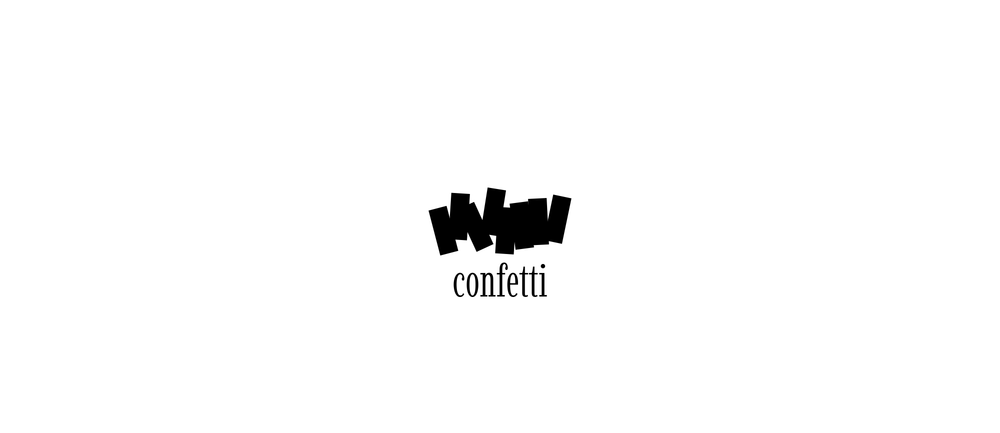

Branding | Logo | Packaging
Confetti

Confetti is a stationery and printed paper goods brand centered around stickers, washi tapes, and journaling embellishments, created for aesthetically conscious people who value visual expression and the ritual of documenting everyday life. The brand aims to redefine the meaning of documentation by transforming small, ordinary, and often overlooked moments into something worth celebrating through thoughtful visual expression.
The idea for Confetti originated from a simple journaling experience. While decorating a journal spread with stickers, tapes, and other paper elements, these seemingly small materials began to feel like confetti, the tiny celebratory fragments scattered across the page. They seemed to quietly cheer for each recorded moment, turning documentation into more than an act of preservation. Instead, it became a subtle yet continuous celebration of everyday life.
The Confetti logo is derived from the brand name itself. The design process began by breaking down the eight letters of “confetti” into individual fragments, echoing the scattered and celebratory nature of confetti. These fragments were then randomly arranged and experimented with through multiple compositions, mimicking the spontaneous movement of confetti as it disperses through space. Through a process of refinement and abstraction, the recognizable letterforms were removed, leaving behind a simplified geometric mark. The final symbol captures the essence of scattered paper fragments while evolving into a clean, memorable graphic form that reflects the brand’s playful yet considered visual identity.